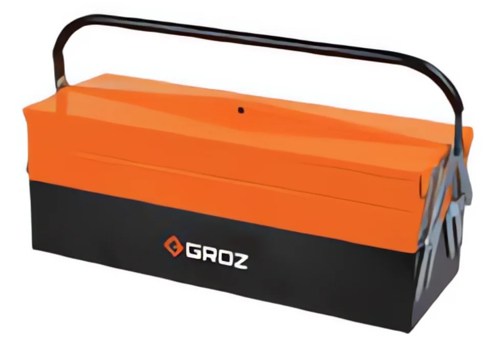

GROZ · Tool Storage
Cantilever Tool Box
CAT NR MTB/5 · ORD NR 40002
| CAT NR (catalogue number) | MTB/5 |
|---|---|
| ORD NR (order number) | 40002 |
| Box quantity | 1 |
| Description (printed in table) | Tool Box |
| Overall load capacity | 35 KG (77 LBS) |
Open in the catalogue The catalogue PDF, page 38-39
From the GROZ Tool Storage catalogue. Not yet verified: these details were read from the printed catalogue automatically; check the catalogue page before ordering.